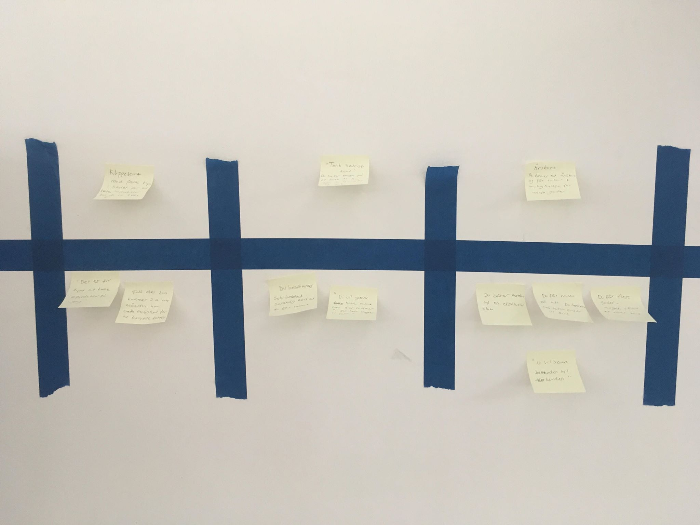

Experience map
Idé 1:
Klippekort med mulighed for færre klip:
Ifølge vores undersøgelse, så synes de fleste gæster at det er dyrt at købe 10 produkter på 1 gang: “Jeg vil slet ikke binde mig til så mange produkter
på ét sted. Så ofte kommer jeg her ikke”.
Derfor vil vil gøre det muligt, at du nu kan købe et klippekort til kun 5 produkter. Dette gør klippekortet billigere og mere “spiseligt” for studerende
og andre gæster der kun kommer 2 gange om måneden. Selvfølgelig vil rabatten ikke være lige så god, som hvis du købte klippekortet med 10 produkter.
Idé 2:
“Tank selv op” kort:
Med dette kort bestemmer kunden selv, hvor mange penge hun vil bruge på sit loyalty kort. Kortet kan kun bruges til at betale Joe & the Juices produkter
med. Joe & the Juice giver kunden lidt ekstra penge på kortet, alt efter hvor mange penge kunden selv sætter på kortet.
Idé 3:
Årskort:
Du finder 3 forskellige Joe Årskort til 3 forskellige priser og med 3 forskellige goder: Sølvkortet er det billigste og giver kortholderen x antal
procent på det samlede køb. Guldkortet er en smule dyrere og giver kortholderen y antal procent på det samlede køb samt invitation til VIP arrangementer.
Platinkortet er det dyreste og giver kortholderen p antal procent på det samlede køb, invitation til VIP arrangementer og så er kunden én af de første
der prøver/tester nye varer, produkter og lign.